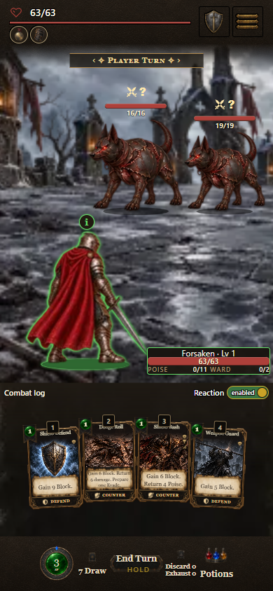

Approved HUD vs implemented build
The reference is the approved illustration. The right side is an actual FixUI source screenshot at 390 × 844, captured October 10 after checkpoint 5a (2900824566f), using art release hd-assets-v18. Images keep their original proportions.
Approved referenceTarget composition · illustration
What was implementedReal source browser capture · FixUI checkpoint 5a

Implemented: enemies occupy the upper battlefield, the player stays above the cards, selected details fit beside the player, and compact Log/Reaction controls sit above the hand. Cards and footer retain their existing layout. Current art and viewport proportions differ from the illustration; compare the three actual selection states.